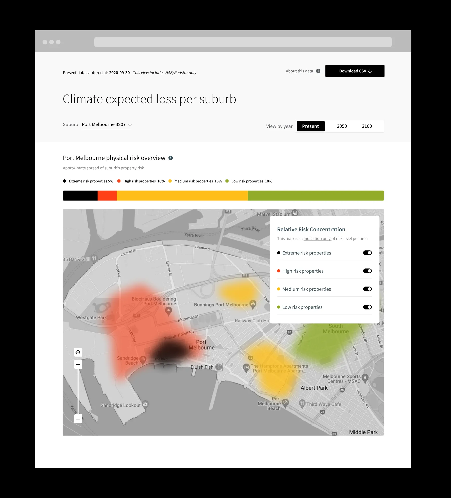
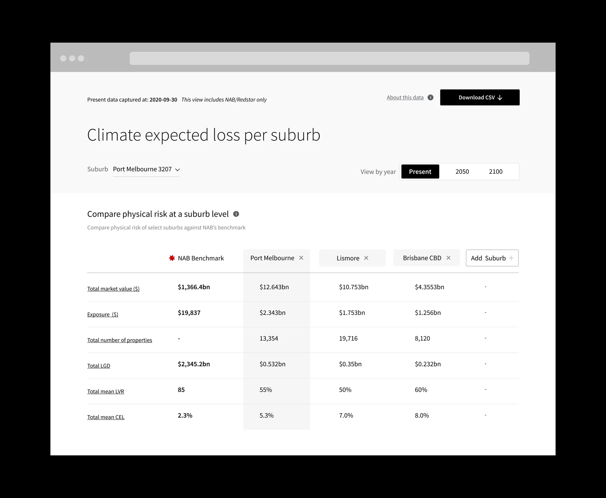
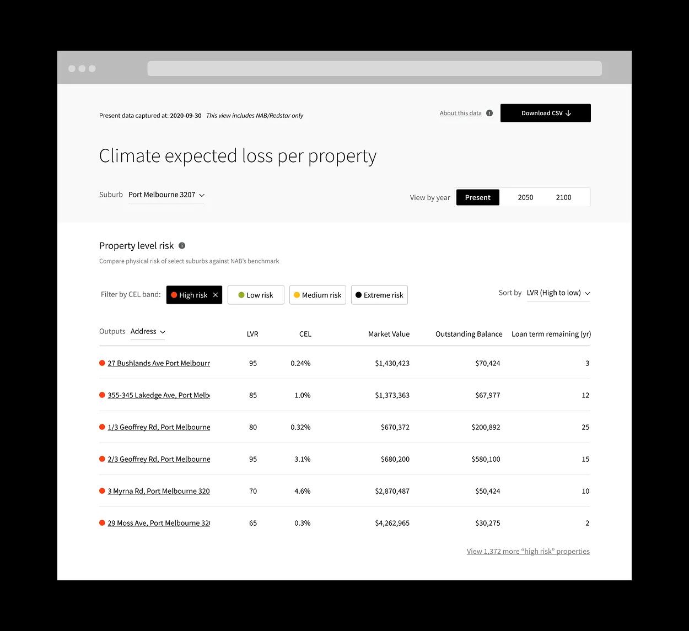
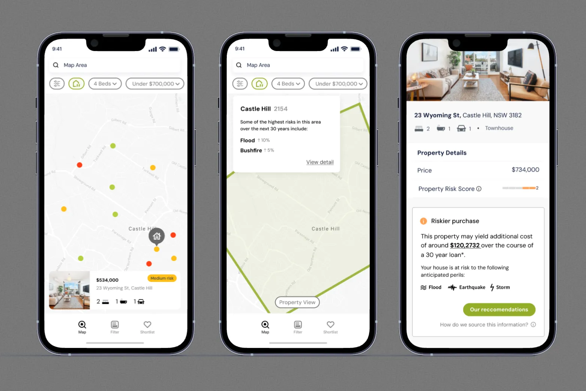
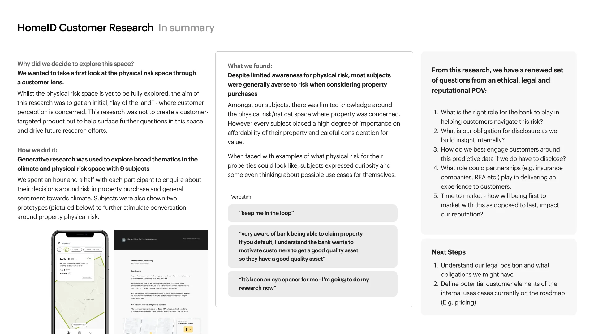

Case study · NAB
Climate Risk Dashboard MVP
A dashboard showing climate risk across NAB’s property lending, from suburb down to a single home.
- The customer
- NAB’s risk and strategy team, and NAB customers who own property
- Team
- Product manager, associate director, engineering team and me
- Skills

The problem
Climate change puts long-term risk on Australia’s property market. NAB needed a way to assess that risk and explain it, both to internal risk teams and to customers who own property.
How I solved it
- 01Defined dashboard requirements with the product manager and associate director, and designed a first pass.
- 02Rapidly prototyped a customer version and ran 9 interviews to test NAB’s right to play in climate.
- 03Ran workshops with the risk team to evaluate and build on the dashboard.
- 04Presented the research strategy at NAB’s climate SteerCo, then managed engineering handover.
Outcome
A two-tier dashboard: geographic risk at a glance, drilling down to each property’s exposure. Customers started with low awareness of climate risk but engaged strongly once they used the prototype, showing clear value in educating the market.
Inside the work


-
A risk analyst logs into the dashboard to evaluate climate-related exposure for a property portfolio or suburb (for example, Port Melbourne)
-
They focus their analysis: “What does climate risk look like here, now, and in the future?” using the heat map and time toggle
-
They quantify macro-level exposure, for example “Lismore has 7% CEL vs Port Melbourne 5%.”
-
They download a report to extract data, used for:
- Internal risk reporting
- ESG disclosures
- Executive briefings
- Lending policy calibration
-
Then:
- Flag suburbs needing closer monitoring
- Adjust credit policy or loan terms
- Recommend mitigations (insurance requirements, diversification)


What I learned
Some customers in the CBD believed climate change wouldn’t affect them, until they saw the flood maps in the prototype.